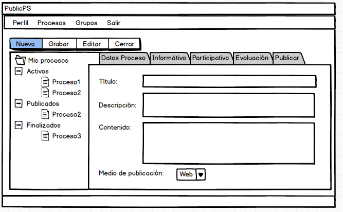
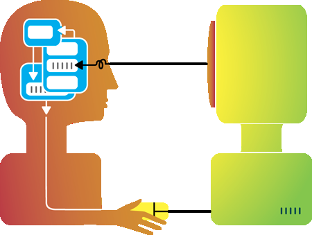

Proposito
El proposito de este sitio para dar solucion a la problematica presentada en la cual se debe realizar el diseño y creacion de una aplicacion, con el fin de dinamizar el aprendizaje con el tema seleccionado La interfaz de usuario,
Interacción Humano Ordenador
La interfaz de usuario
La interfaz de usuario (UI) es el punto de interacción y comunicación humano-computadora en un dispositivo. Esto puede incluir pantallas de visualización, teclados, un mouse y la apariencia de un escritorio. También es la forma en que un usuario interactúa con una aplicación o un sitio web.

Interacción Humano Ordenador
La Interacción Humano-Computadora se convirtió oficialmente en una disciplina con el advenimiento de la computadora personal. Con el primer Macintosh, IBM PC 5150 y Commodore 64 utilizados en la oficina, la gente empezó a darse cuenta de cómo esta transición afectará no sólo a su trabajo sino a sus vidas en general. Los PCs fueron lanzados con muchas nuevas características como procesadores de texto, facilidades de juego y ayudas de contabilidad. Con el tiempo, su nivel de sofisticación aumentó hasta el punto en que el objetivo era hacer que la interacción hombre-computadora se asemejara a la interacción entre humanos, de la forma más natural y sin fisuras posible.
